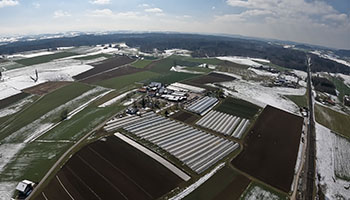
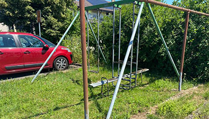
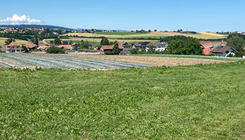
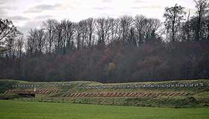

Bahnhof

Der Bahnhof-Riedbach sind für die Bewohner von Riedbach und Oberbottigen wichtig. Der Bus 32 aus Bachmätteli wendet hier auf dem Bahnhofplatz, damit die Passagiere von Oberbottigen und Riedbach selbst Anschlussmöglichkeiten nach Kerzers/Bern haben
Forst

Der Forst (Chlyforst und Grosser Forst) ist eine ökologische Bedeutung von Stadt Bern. Hier kann man sich im grossen Waldgebiet joggen, wandern, Biken und sich austoben. Dort gibt es zahlreiche Arten von Bäumen und Planzen. Auch gibt es verschiedene Waldtieren wie Rehen, Eichhörnchen, usw.
Eglis frische Küchenkreuter
Eglis frischen Küchenkräuter ist der grösste Unternehmen im Raum Riedbach. Sie pflanzen zahlreiche Arten von Gewürze und Kräuter und Blumen auf grossen Felder und Gewächsehalle. Seit 1971 gehört es zur einer tradition.
Spielplatz
Mja, ist heute nur noch der einzige Spiel im ganzen Ort. Die Schaukeln liegt unmittelbar von Bahnhof und gerade neben der Bus-Endhaltestelle. Zum Schaukel macht es für die Kinder sehr Spass. Bis etwa 2008 gab es an der Bottigenstrasse eine kleine Rutschbahn, welche sich von selbst kaputt ging.
Landwirtschaft
Alles was keine Häuser oder andere Einrichtungen Stehen sind die Felder und Weiden. Auf der Weide gibt es viele Kühe. Im Sommer werden grosse Zahlen von Weizen und Mais angebaut. Bei den Kräuterfelder von Eglis kann man die Kräuter riechen.
Schiessstand Mannenried
Der Schiessstand in Mannenried ist der einziege Schiessstand im Region Stadt Bern. Dort trainieren die Polizisten und die Soldaten das Schiessen. Von Bahnhof aus ist der Schiesslärm nicht zu hören.